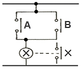
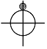
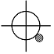
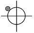
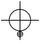
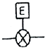
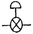
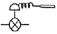
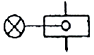
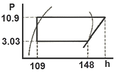

공조냉동기계기능사 (2013-07-21 기출문제)
1과목: 공조냉동안전관리
1. 연삭기 숫돌의 파괴 원인에 해당되지 않는 것은?
- 숫돌의 회전속도가 너무 느릴 때
- 숫돌의 측면을 사용하여 작업할 때
- 숫돌의 치수가 부적당할 때
- 숫돌 자체에 균열이 있을 때
(정답률: 86%)

2. 근로자의 안전을 위해 지급되는 보호구를 설명한 것이다. 이 중 작업조건에 맞는 보호구로 올바른 것은?
- 용접시 불꽃 또는 물체가 날아 흩어질 위험이 있는 작업 : 보안면
- 물체가 떨어지거나 날아올 위험 또는 근로자가 감전되거나 추락할 위험이 있는 작업 : 안전대
- 감전의 위험이 있는 작업 : 보안경
- 고열에 의한 화상 등의 위험이 있는 작업 : 방한복
(정답률: 76%)
3. 방폭 전기설비를 선정할 경우 중요하지 않은 것은?
- 대상가스의 종류
- 방호벽의 종류
- 폭발성 가스의 폭발 등급
- 발화도
(정답률: 79%)
4. 산업안전보건기준에 관한 규칙에서 정한 가스장치실을 설치하는 경우 설치구조에 대한 내용에 해당 되지 않는 것은?
- 벽에는 불연성 재료를 사용할 것
- 지붕과 천장에는 가벼운 불연성재료를 사용할 것
- 가스가 누출된 경우에는 그 가스가 정체되지 않도록 할 것
- 방음장치를 설치할 것
(정답률: 89%)
5. 산소가 충전되어 있는 용기의 취급상 주의사항으로 틀린 것은?
- 용기밸브는 녹이 생겼을 때 잘 열리지 않으므로 그리스 등 기름을 발라둔다.
- 용기밸브의 개폐는 천천히 하며, 산소누출여부 검사는 비눗물을 사용한다.
- 용기밸브가 얼어서 녹일 경우에는 약 40℃정도의 따뜻한 물로 녹여야 한다.
- 산소용기는 눕혀두거나 굴리는 등 충격을 주지 말아야 한다.
(정답률: 87%)
6. 정 작업 시 안전수칙으로 옳지 않은 것은?
- 작업 시 보호구를 착용한다.
- 열처리 한 것은 정 작업을 하지 않는다.
- 공구의 사용전 이상 유무를 반드시 확인한다.
- 정의 머리 부분에는 기름을 칠해 사용한다.
(정답률: 93%)
7. 발화온도가 낮아지는 조건을 나열한 것으로 옳은 것은?
- 발열량이 높을수록
- 압력이 낮을수록
- 산소농도가 낮을수록
- 열전도도가 낮을수록
(정답률: 73%)
8. 안전사고 예방을 위한 기술적 대책이 될 수 없는 것은?
- 안전기준의 설정
- 정신교육의 강화
- 작업공정의 개선
- 환경설비의 개선
(정답률: 86%)
9. 사고 발생의 원인 중 정신적 요인에 해당되는 항목으로 맞는 것은?
- 불안과 초조
- 수면부족 및 피로
- 이해부족 및 훈련미숙
- 안전수칙의 미 제정
(정답률: 89%)
10. 안전모를 착용하는 목적과 관계가 없는 것은?
- 감전의 위험방지
- 추락에 위한 위험경감
- 물체의 낙하에 의한 위험방지
- 분진에 의한 재해방지
(정답률: 80%)
11. 정전기의 예방 대책으로 적합하지 않은 것은?
- 설비 주변에 적외선을 쪼인다.
- 적정 습도를 유지해 준다.
- 설비의 금속 부분을 접지한다.
- 대전 방지제를 사용한다.
(정답률: 83%)
12. 냉동기의 기동전 유의사항으로 틀린 것은?
- 토출밸브는 완전히 닫고 가동한다.
- 압축기의 유면을 확인한다.
- 액관 중에 있는 전자밸브의 작동을 확인한다.
- 냉각수 펌프의 작동 유·무를 확인한다.
(정답률: 86%)
13. 재해 발생 중 사람이 건축물, 비계, 기계, 사다리, 계단 등에서 떨어지는 것을 무엇이라고 하는가?
- 도괴
- 낙하
- 비래
- 추락
(정답률: 90%)
14. 보일러 압력계의 최고눈금은 보일러의 최고사용압력의 몇 배 이상 지시할 수 있는 것이어야 하는가?
- 0.5 배
- 0.75 배
- 1.0 배
- 1.5 배
(정답률: 79%)
15. 고압 전선이 단선된 것을 발견하였을 때 어떠한 조치가 가장 안전한 것인가?
- 위험표시를 하고 돌아온다.
- 사고사항을 기록하고 다음 장소의 순찰을 계속한다.
- 발견 즉시 회사로 돌아와 보고한다.
- 통행의 접근을 막는 조치를 한다.
(정답률: 91%)
2과목: 냉동기계
16. 프레온 냉매의 일반적인 특성으로 틀린 것은?
- 누설되어 식품 등과 접촉하면 품질을 떨어뜨린다.
- 화학적으로 안정되고 연소되지 않는다.
- 전기절연성이 양호하다.
- 비열비가 작아 압축기를 공냉식으로 할 수 있다.
(정답률: 61%)
17. 다음 그림과 같은 회로는 무슨 회로인가?

- AND회로
- OR회로
- NOT회로
- NAND회로
(정답률: 63%)
18. 흡입관경이 20mm(7/8'') 이하일 대 감온통의 부착 위치로 적당한 것은? (단, [보기] 표시가 감온통임)




(정답률: 77%)
19. 다음 그림기호 중 정압식 자동팽창 밸브를 나타내는 것은?




(정답률: 75%)
20. 프레온 냉동장치에서 오일포밍(oil foaming)현상과 관계없는 것은?
- 오힐해머(oil hammer)의 우려가 있다.
- 응축기, 증발기 등에 오일이 유입되어 전열효과를 증가시킨다.
- 크랭크케이스 내에 오일부족현상을 초래한다.
- 오일포밍을 방지하기 위해 크랭크케이스 내에 히터를 설치한다.
(정답률: 69%)
21. 서로 친화력을 가진 두 물질의 용해 및 유리작용을 이용하여 압축효과를 얻는 냉동법은 어느 것인가?
- 증기압축식 냉동법
- 흡수식 냉동법
- 증기분사식 냉동법
- 전자냉동법
(정답률: 67%)
22. 회전식 압축기에서 회전식 베인형의 베인은 어떻게 회전하는가?
- 무게에 의하여 실린더에 밀착되어 회전한다.
- 고압에 의하여 실린더에 밀착되어 회전한다.
- 스프링 힘에 의하여 실린더에 밀착되어 회전한다.
- 원심력에 의하여 실린더에 밀착되어 회전한다.
(정답률: 85%)
23. 냉동능력이 40냉동톤인 냉동장치의 수직형 쉘 엔드 튜브 응축기에 필요한 냉각수량은 약 얼마인가? (단, 응축기 입구 온도는 23℃이며, 응축기 출구 온도는 28℃이다.)
- 51870(L/h)
- 43200(L/h)
- 38844(L/h)
- 34528(L/h)
(정답률: 30%)
24. 동결점이 최저로 되는 용액의 농도를 공융농도라 하고 이때의 온도를 공융온도라 하는데, 다음 브라인 중에서 공융온도가 가장 낮은 것은?
- 염화칼슘
- 염화나트륨
- 염화마그네슘
- 에틸렌글리콜
(정답률: 67%)
25. 1대의 압축기를 이용해 저온의 증발 온도를 얻으려 할 경우 여러 문제점이 발생되어 2단 압축 방식을 택한다. 1단 압축으로 발생되는 문제점으로 틀린 것은?
- 압축기의 과열
- 냉동능력 증가
- 체적 효율 감소
- 성적계수 저하
(정답률: 71%)
26. 할로겐화탄화수소 냉매가 아닌 것은?
- R – 114
- R - 115
- R – 134a
- R - 717
(정답률: 67%)
27. 다음 냉동 사이클에서 이론적 성적계수가 5.0일 때 압축기 토출가스의 엔탈피는 얼마인가?

- 17.8 kcal/kg
- 138.9 kcal/kg
- 19.5 kcal/kg
- 155.8 kcal/kg
(정답률: 44%)
28. 고속다기통 압축기의 장점으로 틀린 것은?
- 동적(動的)평형이 양호하여 진동이 적고 운전이 정숙하다.
- 압축비가 증가하여도 체적효율이 감소하지 않는다.
- 냉동능력에 비해 압축기가 작아서 설치면적이 작아진다.
- 부품의 교환이 간단하고 수리가 용이하다.
(정답률: 43%)
29. 만액식 증발기의 전열을 좋게 하기 위한 것이 아닌 것은?
- 냉각관이 냉매액에 잠겨있거나 접촉해 있을 것
- 증발기 관에 핀(fin)을 부착할 것
- 평균 온도차가 작고 유속이 빠를 것
- 유막이 없을 것
(정답률: 65%)
30. 증발기에 대한 설명 중 틀린 것은?
- 건식 증발기는 냉매액의 순환량이 많아 액분리가 필요하다.
- 프레온을 사용하는 만액식 증발기에서 증발기내 오일이 체류할 수 있으므로 유회수 장치가 필요하다.
- 반 만액식 증발기는 냉매액이 건식보다 많아 전열이 양호하다.
- 건식 증발기는 주로 공기냉각용으로 많이 사용한다.
(정답률: 48%)
31. 열펌프에 대한 설명 중 옳은 것은?
- 저온부에서 열을 흡수하여 고온부에서 열을 방출한다.
- 성적계수는 냉동기 성적계수보다 압축소요동력 만큼 낮다.
- 제빙용으로 사용이 가능하다.
- 성적계수는 증발온도가 높고, 응축온도가 낮을수록 작다.
(정답률: 64%)
32. 무기질 단열재에 해당되지 않는 것은?
- 코르크
- 유리섬유
- 암면
- 규조토
(정답률: 61%)
33. 냉동장치에 사용하는 냉동기유의 구비조건으로 잘못된 것은?
- 적당한 점도를 가지며, 유막형성 능력이 뛰어날 것
- 인화점이 충분히 높아 고온에서도 변하지 않을 것
- 밀폐형에서 사용하는 것은 전기절연도가 클 것
- 냉매와 접촉하여도 화학반응을 하지 않고, 냉매와의 분리가 어려운 것
(정답률: 76%)
34. 냉동장치의 흡입관 시공 시 흡입관의 입상이 매우 길 때에는 약 몇 m 마다 중간에 트랩을 설치하는가?
- 5m
- 10m
- 15m
- 20m
(정답률: 73%)
35. 압축기 보호장치 중 고압차단 스위치(HPS)의 작동압력은 정상적인 고압에 몇 kgf/cm2 정도 높게 설정하는가?
- 1
- 4
- 10
- 25
(정답률: 70%)
36. 브라인을 사용할 때 금속의 부식방지법으로 맞지 않는 것은?
- 브라인 pH를 7.5~8.2정도로 유지 한다.
- 방청제를 첨가 한다.
- 산성이 강하면 가성소다로 중화시킨다.
- 공기와 접촉시키고, 산소를 용입시킨다.
(정답률: 84%)
37. 냉동관련 설명에 대한 내용 중에서 잘못된 것은?
- 1 Btu란 물 1lb를 1˚F 높이는데 필요한 열량이다.
- 1 kcal란 물 1kg를 1℃ 높이는데 필요한 열량이다.
- 1 Btu는 3.968 kcal에 해당된다.
- 기체에서 정압비열은 정적비열보다 크다.
(정답률: 61%)
38. 100V 교류 전원에 1kW 배연용 송풍기를 접속하였더니 15A의 전류가 흘렀다. 이 송풍기의 역률은 약 얼마인가?
- 0.57
- 0.67
- 0.77
- 0.87
(정답률: 61%)
39. 핀 튜브에 관한 설명 중 틀린 것은?
- 관내에 냉각수, 관외부에 프레온 냉매가 흐를 때 관 외측에 부착한다.
- 증발기에 핀 튜브를 사용하는 것은 전열 효과를 크게 하기 위함이다.
- 핀은 열전달이 나쁜 유체 쪽에 부착한다.
- 관내에 냉각수, 관외부에 프레온 냉매가 흐를 때 관 내측에 부착한다.
(정답률: 60%)
40. 냉동 사이클의 구성 순서가 바른 것은?
- 증발 → 응축 → 팽창 → 압축
- 압축 → 응축 → 증발 → 팽창
- 압축 → 응축 → 팽창 → 증발
- 팽창 → 압축 → 증발 → 응축
(정답률: 76%)
41. 물이 얼음으로 변할 때의 동결잠열은 얼마인가?
- 79.68 kJ/kg
- 632 kJ/kg
- 333.62 kJ/kg
- 0.5 kJ/kg
(정답률: 48%)
42. 압축기의 축봉장치에서 슬립 링형 축봉장치의 종류에 속하는 것은?
- 소프트 패킹식
- 메탈릭 패킹식
- 스터핑 박스식
- 금속 벨로우즈식
(정답률: 60%)
43. 다음 중 동관작업에 필요하지 않는 공구는?
- 튜브 벤더
- 사이징 툴
- 플레어링 툴
- 클립
(정답률: 83%)
44. 다음 중 냉동능력의 단위로 옳은 것은?
- kcal/kg·m2
- kJ/h
- m3/h
- kcal/kg℃
(정답률: 64%)
45. 냉동기의 정상적인 운전 상태를 파악하기 위하여 운전관리상 검토해야 할 사항으로 틀린 것은?
- 윤활유의 압력, 온도 및 청정도
- 냉각수 온도 또는 냉각공기 온도
- 정지 중의 소음 및 진동
- 압축기용 전동기의 전압 및 전류
(정답률: 76%)
3과목: 공기조화
46. 실내에 있는 사람이 느끼는 더위, 추위의 체감에 영향을 미치는 수정 유효온도의 주요 요소는?
- 기온, 습도, 기류, 복사열
- 기온, 기류, 불쾌지수, 복사열
- 기온, 사람의 체온, 기류, 복사열
- 기온, 주위의 벽면온도, 기류, 복사열
(정답률: 79%)
47. 송풍기의 법칙에 대한 내용 중 잘못된 것은?
- 동력은 회전속도비의 2제곱에 비례하여 변화한다.
- 풍량은 회전속도비에 비례하여 변화한다.
- 압력은 회전속도비의 2제곱에 비례하여 변화한다.
- 풍량은 송풍기 크기비의 3제곱에 비례하여 변화한다.
(정답률: 41%)
48. 실내 냉방시 현열부하가 8000kcal/h인 실내를 26℃로 냉방하는 경우 20℃의 냉풍으로 송풍하면 필요한 송풍량은 약 몇 m3/h 인가? (단, 공기의 비열은 0.24kcal/kg℃이며, 비중량은 1.2kg/m3이다.)
- 2893
- 4630
- 5787
- 9260
(정답률: 52%)
49. 유체의 역류방지용으로 가장 적당한 밸브는?
- 게이트 밸브(gate valve)
- 글로브 밸브(globe valve)
- 앵글 밸브(angle valve)
- 체크 밸브(check valve)
(정답률: 77%)
50. 냉방부하를 줄이기 위한 방법으로 적당하지 않은 것은?
- 외벽 부분의 단열화
- 유리창 면적의 증대
- 틈새바람의 차단
- 조명기구 설치축소
(정답률: 72%)
51. 덕트 시공에 대한 내용 중 잘못된 것은?
- 덕트의 단면적비가 75% 이하의 축소부분은 압력손실을 적게하기 위해 30˚ 이하(고속덕트 에서는 15˚이하)로 한다.
- 덕트의 단면변화 시 정해진 각도를 넘을 경우에는 가이드 베인을 설치한다.
- 덕트의 단면적비가 75% 이하의 확대부분은 압력손실을 적게하기 위해 15˚ 이하(고속덕트 에서는 8˚이하)로 한다.
- 덕트의 경로는 될 수 있는 한 최장거리로 한다.
(정답률: 79%)
52. 공기조화기의 열원장치에 사용되는 온수보일러의 개방형 팽창탱크에 설치되지 않는 부속설비는?
- 통기관
- 수위계
- 팽창관
- 배수관
(정답률: 52%)
53. 환기방식 중 환기의 효과가 가장 낮은 환기법은?
- 제1종 환기
- 제2종 환기
- 제3종 환기
- 제4종 환기
(정답률: 75%)
54. 건구온도 20℃, 절대습도 0.008kg/kg(DA)인 공기의 비엔탈피는 약 얼마인가? (단, 공기의 정압비열(Cp)은 0.24kcal/kg℃, 수증기의 정압비열(Cp)은 0.441kcal/kg℃이다.)
- 7 kcal/kg(DA)
- 8.3 kcal/kg(DA)
- 9.6 kcal/kg(DA)
- 11 kcal/kg(DA)
(정답률: 39%)
55. 개별공조방식의 특징으로 틀린 것은?
- 개별제어가 가능하다.
- 실내유닛이 분리되어 있지 않는 경우는 소음과 진동이 크다.
- 취급이 용이하며, 국소운전이 가능하다.
- 외기냉방이 용이하다.
(정답률: 76%)
56. 역 환수(reverse return)방식을 채택하는 이유로 가장 적합한 것은?
- 환수량을 늘리기 위하여
- 배관으로 인한 마찰저항이 균등해 지도록 하기 위하여
- 온수 귀환관을 가장 짧은 거리로 배관하기 위하여
- 열손실을 줄이기 위하여
(정답률: 50%)
57. 보일러의 종류에 따른 전열면적당 증발량으로 틀린 것은?
- 노통보일러 : 45~65(kgf/m2·h) 정도
- 연관보일러 : 30~65(kgf/m2·h) 정도
- 입형보일러 : 15~20(kgf/m2·h) 정도
- 노통연관보일러 : 30~60(kgf/m2·h) 정도
(정답률: 48%)
58. 팬형가습기(증발식)에 대한 설명으로 틀린 것은?
- 팬속의 물을 강제적으로 증발시켜 가습한다.
- 가습장치 중 효율이 가장 우수하며, 가습량을 자유로이 변화시킬 수 있다.
- 가습의 응답속도가 느리다.
- 패키지형의 소형 공조기에 많이 사용한다.
(정답률: 58%)
59. 공기 가열코일의 종류에 해당되지 않는 것은?
- 전열 코일
- 습 코일
- 증기 코일
- 온수 코일
(정답률: 63%)
60. 이중 덕트 공기조화 방식의 특징이라고 할 수 없는 것은?
- 열매체가 공기이므로 실온의 응답이 빠르다.
- 혼합으로 인한 에너지 손실이 없으므로 운전비가 적게 든다.
- 실내습도의 제어가 어렵다.
- 실내부하에 따라 개별제어가 가능하다.
(정답률: 50%)